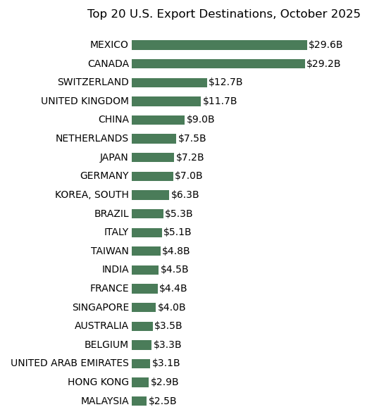

The Census International Trade API provides access to detailed U.S. import and export data by country, commodity, and time period. This tutorial demonstrates how to retrieve export data and identify top U.S. trading partners.
The Census Bureau collects data on U.S. merchandise trade through customs declarations. The international trade dataset includes monthly statistics on exports and imports by partner country and product category.
The main variables we'll use are:
CTY_CODE - Country code identifying the trading partner. Codes 1000-8000 represent individual countries (excluding regional aggregates).CTY_NAME - Country name for display purposes.ALL_VAL_MO - Total value of exports for the month in U.S. dollars.The full list of variables is available in the API documentation.
Import the required packages and load your Census API key from a local config file (see the Getting Started guide for details). You can register for a free API key at the Census Bureau website.
In[1]:
import requests
import pandas as pd
import matplotlib.pyplot as plt
import config
key = config.census_keyConstruct the API request to retrieve export values by country for a specific month. The endpoint intltrade/exports/hs provides Harmonized System trade data.
In[2]:
url = 'https://api.census.gov/data/timeseries/intltrade/exports/hs'
params = {
'get': 'CTY_CODE,CTY_NAME,ALL_VAL_MO',
'key': key,
'time': '2025-10'
}
data = requests.get(url, params=params).json()The response contains a list of lists, with the first row being column headers:
In[3]:
data[:3]Out[3]:
[['CTY_CODE', 'CTY_NAME', 'ALL_VAL_MO', 'time'], ['0001', 'OPEC', '5765070418', '2025-10'], ['0003', 'PACIFIC RIM', '35817684498', '2025-10']]Process the Data
Convert to a DataFrame, filter to individual countries (codes 1000-8000), and convert values to numeric billions.
In[4]:
df = pd.DataFrame(data[1:], columns=data[0])
# Some codes are non-numeric (e.g. '-'); keep only numeric codes
df = df.loc[df['CTY_CODE'].str.isdigit()]
df['CTY_CODE'] = df['CTY_CODE'].astype(int)
df = df[(df['CTY_CODE'] >= 1000) & (df['CTY_CODE'] < 8000)]
# Convert to billions
df['ALL_VAL_MO'] = df['ALL_VAL_MO'].astype(float) / 1e9Sort by export value and select the top 20 trading partners.
In[5]:
top20 = (df.sort_values('ALL_VAL_MO', ascending=True)
.tail(20)
.set_index('CTY_NAME')['ALL_VAL_MO'])Plot a horizontal bar chart showing the top export destinations.
In[6]:
fig, ax = plt.subplots(figsize=(8, 8))
top20.plot(kind='barh', ax=ax, color='#4a7c59')
ax.set_xlabel('')
ax.set_ylabel('')
ax.axis('off')
# Add value labels
for i, (country, val) in enumerate(top20.items()):
ax.text(-0.5, i, country, ha='right', va='center', fontsize=10)
ax.text(val + 0.3, i, f'${val:.1f}B', ha='left', va='center', fontsize=10)
ax.set_title('Top 20 U.S. Export Destinations, October 2025\n', fontsize=12)
plt.tight_layout()
plt.show()Out[6]:
